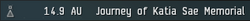

User:Vega Blazar/Notepad: Difference between revisions
Vega Blazar (talk | contribs) No edit summary |
Vega Blazar (talk | contribs) No edit summary |
||
| (2 intermediate revisions by the same user not shown) | |||
| Line 2: | Line 2: | ||
https://forums.eve-scout.com/topic/342/primer-using-eve-scout-to-navigate-to-or-from-thera | https://forums.eve-scout.com/topic/342/primer-using-eve-scout-to-navigate-to-or-from-thera | ||
<big>'''Hello and Welcome to Signal Cartel!'''</big> | |||
The '''Signal Cartel New Member Orientation Guide''' is designed to help you get started on your journey as a “Signaleer”, our affectionate name for a Signal Cartel capsuleer. It provides critical information on our policies, communication channels, apps, services, and divisions within the corp. If you're new to EVE, we have a number of resources available to help you develop the skills and knowledge to successfully explore New Eden. We regularly hold talks and classes on many aspects of the game that are designed for new and experienced pilots alike. Our aim is to provide a welcoming and supportive environment for all explorers. | |||
The format of the Orientation Guide has been conveniently divided into sections that correspond to your time in the corp. Our intent with this approach is to slowly ease you into our corp life and culture while making it as informative and fun as possible. | |||
Let's get started... | |||
While we take exploration seriously, Signal Cartel as a whole is pretty laid back corporation as long as some basic ground rules are followed. | |||
Latest revision as of 05:49, 26 January 2024
Vega's Notepad
https://forums.eve-scout.com/topic/342/primer-using-eve-scout-to-navigate-to-or-from-thera
Hello and Welcome to Signal Cartel!
The Signal Cartel New Member Orientation Guide is designed to help you get started on your journey as a “Signaleer”, our affectionate name for a Signal Cartel capsuleer. It provides critical information on our policies, communication channels, apps, services, and divisions within the corp. If you're new to EVE, we have a number of resources available to help you develop the skills and knowledge to successfully explore New Eden. We regularly hold talks and classes on many aspects of the game that are designed for new and experienced pilots alike. Our aim is to provide a welcoming and supportive environment for all explorers.
The format of the Orientation Guide has been conveniently divided into sections that correspond to your time in the corp. Our intent with this approach is to slowly ease you into our corp life and culture while making it as informative and fun as possible.
Let's get started...
While we take exploration seriously, Signal Cartel as a whole is pretty laid back corporation as long as some basic ground rules are followed.
EvE-Scout, our sister corporation, operates this service within Thera and Turnur as a crowdsourced endeavor tasked with scanning and recording the current wormhole access locations into the hub systems. Thera Scanning is the original project that led to the creation of the EvE-Scout Enclave alliance and Signal Cartel! Our Scanners are compensated by the generous donations of those that find our service invaluable.
For TripTiks:
What Are TripTiks?[edit]
TripTiks are one-sheet expedition plans listing waypoints of interest and providing fact-based information about them. Our vision is that capsuleers will use them as navigation guides to visit the waypoints and — prompted by the information in the TripTik — learn more about the interesting things discovered there. https://forums.eve-scout.com/topic/29/explore-new-eden-with-our-free-expedition-triptiks
For Katia Sae Monument:
How to Visit[edit]
- Travel to the Saisio system, which is located in The Forge region
- Warp to the Journey of Katia Sae Memorial beacon: 
- Admire, take lots of photos, and then submit them to our EvE-Observatory
- Buy a snow globe at the memorial's gift shop ;)
{kind=link}
- Note: If you get lost, follow our The Journey of Katia Sae Memorial TripTik
For Sky:
Instructions[edit]
To use the BB (Buy Back) service simply follow these steps.
- Create an Item Exchange contract to EvE-Scout Logistics [ESLO] corporation at a supported location.
- Select the items from your hangar that you would like to send.
- Set the following options:
- I will pay = 0
- I will receive = 0
- Expiration = 2 weeks
- Description = BB Program
- Review contract details.
MediaWiki:Tagline From The Explorer's Compendium
css: /*resizing images for small screens*/ img { height: auto; max-width: 96%; }
for main page banner: https://www.mediawiki.org/wiki/Template:Banner
https://www.mediawiki.org/wiki/Skin:Timeless
TripTik Migration to the Wiki[edit]
We're moving all of our existing TripTiks from signalcartel.org to the wiki. Hopefully, this will make them easier to create, maintain, and curate over time.
How to Help:
- Pick an Expedition TripTik from the table below that hasn't already been claimed.
- To claim your TripTik, please add your name and update its status to "WIP" by editing the table below.
- Next, open your TripTik page and transfer the original TripTik info located at signalcartel.org into your page.
- Please use our Expedition TripTik Wiki Page Mockup as a format/style guide. If you press the
Editbutton on the Mockup page you will see the wikicode that you copy/paste into your own page. Afterwards, please press theCancelbutton on the Mockup page so you do not alter it for others. - Make sure to properly use the TripTikNavi infobox template on your TripTik page. Here are the instructions: Template:TripTikNavi/doc.
- NOTE: The footer on the TripTik Wiki Page Template is a WIP and is not done yet, so leave this info blank for now on your own page.
- Here are two examples of a successfully migrated TripTik for your reference: The Elder War Tour and Ancient Races of New Eden.
- Please use our Expedition TripTik Wiki Page Mockup as a format/style guide. If you press the
- Did you double check your work? Are all those hyperlinks working and pointing in the right direction?!
- Once you're finished-finished, please DM Jen Hoshi on Discord so that your work can be reviewed.
- After your page is approved, change the status of your TripTik on the table below from "WIP" to "Migrated".
- Nice! Now go do another one... ;)
ProTips:
- Learn more about editing the wiki by clicking here.
- If you run into any snags or have questions about the wiki or the process, please reach out to Vega Blazar on Discord.
- EvE-Scout Forums - Appropriate for more long-form questions and answers that do not need immediate feedback. It also allows for more cohesive topic-based discussions and for more corp members to contribute to a conversation over time. It's an excellent resource to research past discussions as well.